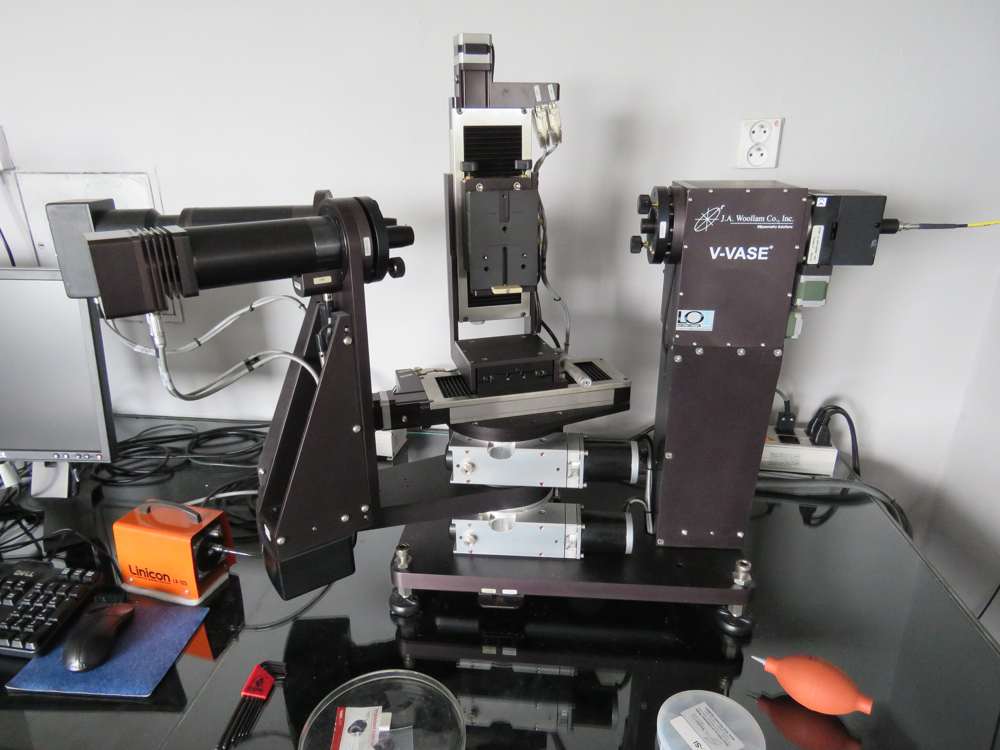

Prvky webu
Kapitola:
Kapitola
Podkapitola:
Podkapitola
Odkaz na podkapitolu:
Odkaz
Otevřít navigaci:
Zavřít navigaci:
Indikátor pro posun obsahu dolů-nahoru:
VĚDECKÉ ZAMĚŘENÍ
Optické a magneto-optické vlastnosti pevných látek včetně nízkodimenzionálních struktur, jejich specifické projevy a uplatnění; metoda spektroskopické eliposmetrie v~širokém spektrálním oboru (ex-situ a in-situ); metoda magneto-optické spektroskopie v různých experimentálních uspořádáních.
VZDĚLÁNÍ
Mgr.
Ph.D.
Dr.
1998
Matematicko-fyzikální fakulta, Univerzita Karlova, Česká republika
Mgr. Fyzika, Optika a optoelektronika
Dipl. práce: Komplexní magnetooptické studium Pd/Fe/MgO(001)
struktur
Vedoucí práce: Prof. Štefan Višňovský
Konzultanti: Dr. Miroslav Nývlt, Mgr. Radek Lopušník
2002
Université de Versailles-Saint-Quentin en Yvelines, Versailles,
Francie
Dr. Fyzika (Physique), Materiálové vědy (Sciences des Matériaux)
Disertační práce: Etudes des propriétés physiques par
spectroscopie magneto-optique de couches minces d'oxydes
magnétiques préparé par dépot laser pulsé. Disertační práce pod
dvojím vedením (cotutelle)
Vedoucí práce: Prof. Štefan Višňovský, Dr. Marcel Guyot
2003
Matematicko-fyzikální fakulta, Univerzita Karlova, Česká republika
Ph.D. Fyzika, Kvantová optika a optoelektronika
Disertační práce: Magneto-optical study of physical properties of
magnetic oxide thin films prepared by pulsed laser deposition.
Disertační práce pod dvojím vedením (cotutelle)
Vedoucí práce: Prof. Štefan Višňovský, Dr. Marcel Guyot
ZAMĚSTNÁNÍ
2002 - 2006
2007 - 2014
2006 - dosud
2015 - 2017
2015 - dosud
2002 - 2006
Assistant professor
Charakterizační a aplikační laboratoř nanostruktur - Výzkumný
ústav elektroniky, Univerzita Shizuoka, Hamamatsu, Japonsko
Vědecká práce (spektroskopická elipsometrie, optika) a spolupráce
s průmyslo\-vý\-mi partnery (Komatsu electric Ltd., Murakami
Kaimeido Ltd., Dainippon Screen Ltd.) pod vedením Prof. Tomua
Yamaguchiho.
Výuka v laboratorních cvičeních pregraduálního studia, Graduate
School of Science and Technology, Shizuoka University.
Výuka v laboratorních cvičeních pregraduálního studia, Graduate
School of Science and Technology, Shizuoka University.
2007 - 2014
Vědecký pracovník
ELLA-CS s.r.o, výrobce speciální zdravotnické techniky
Spoluúčast na řešení projektů Evropské komise a národních
projektů. Projekty se kromě jiného dotýkaly využití optických
metod pro inovaci zdravotnických prostředků (SafeCatheter -
fotokatalytická aktivace antibakteriálního ventilu močového
katetru), případně pak optické charakterizace
bio-funkcionalizovaných povrchů (Biokom - elipsometrická evaluace
kvality diamantového pokrytí koronárních stentů).
2006 - dosud
Odborný asistent
Ústav aplikované fyziky a matematiky - Fakulta
chemicko-technologická, Univerzita Pardubice
Výuka ve všech stupních (bakalářských, magisterských a
doktorských) studijních programů. Vedení studentských prací
(diplomových a bakalářských) včetně studentských vědeckých (SVOČ)
a středoškolských odborných prací (SOČ).
Vybudování elipsometrické laboratoře pro optickou charakterizaci
nanostruktur.
Vědecká spolupráce s průmyslovými partnery (např. Synthesia a.s.,
Toseda s.r.o, Ella-CS s.r.o, Medicem s.r.o., Meopta a.s.),
převážně v oblasti optické charakterizace zadaných materiálů a
struktur.
2015 - 2017
Vědecký pracovník
Ústav fyzikální elektroniky, Přírodovědecká fakulta, Masarykova
univerzita, Brno
Spoluúčast na projektu CEPLANT (R\& D centre for plasma and
nanotechno\-lo\-gy surface modifications) pod vedením Prof. Ivana
Ohlídala. Teoretické řešení interakce světla s opticky
nehomogenními vrstvami.
2015 - dosud
Vědecký pracovník
Centrum materiálů a nanotechnologií (CEMNAT) - Fakulta
chemicko-technologická, Univerzita Pardubice
Výzkum a vývoj anorganických nanomateriálů, charakterizace jejich
optických vlastností a posouzení jejich využitelnosti ve fotonice
a optoelektronice.
Stavba optické sestavy pro holografický záznam difrakčních prvků
chalkoge\-ni\-do\-vých skel.
DOSAŽENÉ ÚSPĚCHY & VYBRANÉ AKTIVITY
Ocenění
Zvané přednášky
Zvaný přednáškový cyklus
Profesní aktivity (výběr)
Ocenění
Získání stipendia francouzského ministerstva školství na pracovní
pobyt v Národním institutu aplikované vědy v Toulouse, Francie
(1997)
Získání stipendia francouzského ministerstva školství pro
absolvování disertační práce pod dvojím vedením - en cotutelle
(1999).
Obhajoba disertační práce (Etudes des propriétés physiques par
spectroscopie magneto-optique de couches minces d'oxydes
magnétiques préparé par dépot laser pulsé) s vyznamenáním - avec
félicitation du jury. \\Komise: Prof. F. Varret, Prof. Š.
Višňovský, Dr. M. Guyot, Prof. A. Fert, Prof. I. Pelant, Prof. J.
Čtyroký, Prof. R. Krishnan (2002)
Vedoucí diplomové práce, která byla oceněna společností Pfizer
jako nejlepší diplomová práce v roce 2022 v oblasti farmakochemie:
Kristína Husárová, Určení optických konstant ftalocyaninu MoS_2 a
jejich posouzení pro fotodynamickou a fototermální terapii,
Univerzita Pardubice
Zvané přednášky
J. Mistrík, “Light polarization as sensitive probe of
nanomaterials properties“, Energy Materials and Nanotechnology
Hong Kong meeting, December 2015, Hong Kong.
R. Antos, J. Mistrík, T. Yamaguchi, M. Veis, E. Liskova, S.
Visnovsky, J. Pistora, B. Hillebrands, S.O. Demokritov, T. Kimura,
and Y. Otani “Magneto-optical spectroscopic scatterometry for
analyzing patterned magnetic nanostructures”, MORIS 2006 workshop,
June 2006, Chiba, Japan.
J. Mistrík, T. Yamaguchi, R. Antos, Z. T. Jiang, I. Ohlidal, M.
Aoyama, “Spectroscopic ellipsometry; its accuracy and
potentiality”, 10th International Symposium on Microwave and
Optical Technology (ISMOT), August 2005, Fukuoka, Japan.
N. Keller, J. Mistrík, M. Guyot, S. Visnovsky, R. Krishnan, “High
temperature Growth NiO/Fe_2O_3 Multilayers: Magnetismus and
Interdiffusion”, The Eighth International Conference on Ferrites
(ICF 8), September 2000, Kyoto and Tokyo, Japan.
Zvaný přednáškový cyklus
Optické vlastnosti tenkých vrstev a povrchů leden/únor 2012 Zvaný
16-ti hodinový přednáškový cyklus v rámci vzdělávacího projektu
doktorandů a akademiků na Fakultě chemicko-technologické
Univerzity Pardubice - TEAM CMV (OP VpK), garant Prof. Tomáš
Wágner.
Profesní aktivity (výběr)
Předseda sekce konference (chairman), 12th International
Conference on Solid Films and Surfaces, 21-25 June 2004,
Hamamatsu, Japan.
Předseda sekce konference (chairman), The 18th International
Conference on Global Research and Education In engineering for
Sustainable Future, 4-7 September 2019, Budapest, Hungary.
Člen skupiny recenzentů (Member of Reviewer Board), Nanomaterials,
IF=5.7 (2022), 2020-dosud.
Vědecký recenzent následujících odborných časopisů: Nanomaterials,
Applied Surface Sciences, Journal of Applied Physics, Applied
Physics A, Applied Sciences, Thin Solid Films, Optical Materials.
Člen komise pro rigorózní řízení v oboru Fyzikální měření a
modelování a~Uči\-tel\-ství fyziky pro střední školy,
Přírodovědecké fakulty, Univerzity Hradec Králové.
Členství ve vědecké společnosti: The Japan Society of Applied
Physics, 2002-2006.
ÚČAST NA PROJEKTECH
Odborné projekty
Pedagogické projekty
Ostatní odborné projekty
Odborné projekty
Ovlivnění sklotvornosti a modifikace fotoindukovaných vlastností
hybridních amorfních chalkogenidů skrz řízenou koncentraci volných
elektronových párů, GC20-23392J \textbf{GAČR} (2020-2022) člen
řešitelského týmu.
Přechod mezi amorfním a krystalickým stavem (3D2D) u
chalkogenidových materiálů vázaných van der Waalsovou vazbou,
GA19-17997S \textbf{GAČR} (2019-2022) člen řešitelského týmu.
Výzkumná infrastruktura CEMNAT, LM2018103 \textbf{MŠMT}
(2020-2022) člen ře\-ši\-tel\-ského týmu.
Centrum materiálů a nanotechnologií, LM2015082 \textbf{MŠMT}
(2016-2019) člen řešitelského týmu.
Příprava a charakterizace mikro a nanostruktur ve vysokoindexových
sklech, GA16-13876S \textbf{GAČR} (2016-2018) člen řešitelského
týmu.
Analýza a aplikace plazmatických procesů pro přípravu tenkých
vrstev amorfních chalkogenidů, GA13-05082S \textbf{GAČR}
(2013-2015) člen řešitelského týmu.
Syntéza anizotropních vrstev pomocí plazmové nanotechnologie,
GCP205/12/J058 \textbf{GAČR} (2012-2014) člen řešitelského týmu.
Bioaktivní biokompatibilní povrchy a nové nanostrukturované
kompozity pro aplikace v medicíně a farmacii, KAN200100801
\textbf{AVČR} (2008-2012) spoluřešitel.
Nanokompozitní vrstvy a nanočástice vytvářené v nízkotlakém
plazmatu pro povrchové modifikace, KAN101120701 \textbf{AVČR}
(2007-2011) člen řešitelského týmu.
Cílená příprava speciálních sloučenin a materiálů a jejich
fyzikálně-chemických vlastností a nadmolekulárních struktur,
MSM0021627501 \textbf{MŠMT} (2005(7)-2010) člen řešitelského týmu.
Pedagogické projekty
Zviditelnění aplikačního potenciálu fyzikálních úloh předmětů
Laboratoře z~fy\-zi\-ky I a II napříč studijními programy,
IRS2018/018, Interní rozvojová soutěž Univerzity Pardubice (2018)
člen řešitelského týmu.
Podpora odborného vzdělávání a rozvoje vědeckovýzkumného týmu
Centra materiálového výzkumu Pardubice, CZ.1.07/2.3.00/09.0104
\textbf{MŠMT} (2012) člen řešitelského týmu.
Rozvoj a inovace laboratorních cvičení z fyziky, FRVŠ/2010/1465
\textbf{MŠMT} (2010) člen řešitelského týmu.
Inovace laboratorních cvičení z fyziky, FRVŠ/2008/1755
\textbf{MŠMT} (2008) člen řešitelského týmu.
Ostatní odborné projekty
SAFE CATHETER (Development of a cost-effective anti-bacterial
device for the 37 million urethral catheters used in enlarged
Europe), FP 7-SME-2007-1: Research for the benefit of SMEs, Grant
agreement ID: 222164 \textbf{European Commission} (2008-2010) člen
řešitelského týmu.
Conform2Jet (Self-Learning Control System for Freeform Milling
with High Energy Fluid Jets), FP7-NMP-2008-3.2-2, Self-learning
production systems, Grant agreement ID: 262806 \textbf{European
Commission} (2009-2013) člen řešitelského týmu.
SmartNets (The Transformation from Collaborative Knowledge
Exploration Networks into Cross Sectoral and Service Oriented
Integrated Value Systems), FP7- NMP-2010-3.1-1, New industrial
models for a sustainable and efficient production, Grant agreement
ID: 262806 \textbf{European Commission} (2011-2014) člen
řešitelského týmu.
OPONENTNÍ POSUDKY & ÚČAST V KOMISÍCH
Oponentní posudky projektů
Účast v PhD komisích v zahraničí
Oponentní posudky návrhu PhD prací
Oponentní posudky PhD prací
Rigorózní řízení (výběr)
Oponentní posudky diplomových prací
Oponentní posudky projektů
Projekt "Realizace vrstevnatých systémů s požadovanými
spektrálními závis\-lost\-mi odrazivosti a propustnosti ve střední
ultrafialové oblasti spektra", Program TRIO (MPO), ev. č.
projektu: FV40328; příjemce účelové podpory: Meopta - optika,
s.r.o. další účastníci projektu: Český metrologický institut,
Masarykova univerzita, Vysoké učení technické v Brně. Oponentní
posudky vypracovány pro průběžné zprávy v letech: 2019, 2020 a
2021.
Projekt "Nanofotonické zobrazování buněčných struktur v reálném
čase pomocí nanodiamantových částic", MŠMT, ev. č. projektu:
LD11078, příjemce: České vysoké učení technické v Praze. Oponentní
posudek vypracovaný pro průběžnou zprávu pro rok 2012.
Posouzení žádosti o přidělení investičních prostředků na nákladný
optický přístroj. Zadavatel: Akademická rada AV ČR, 2008.
Účast v PhD komisích v zahraničí
Bruno Berini, \emph{Elaboration de couches minces de
$\mathit{SmFeO_3}$ et $\mathit{LaNiO_3}$, de structure perovskite,
par dépôt laser pulsé. Etudes associées des transitions de phase à
haute température par ellipsométrie spectroscopique in situ},
12/2007, l'Université de Versailles Saint Quentin en Yvelines,
Francie, zkoušející (examinateur).
Oponentní posudky návrhu PhD prací
Václav Petrák, \emph{Study of growth, doping and properties of
thin diamond films}, 10/2012, České vysoké učení technické v
Praze, Fakulta biomedicínského inže\-nýr\-ství, Kladno, oponent.
Vladimíra Petráková, \emph{Study of optical properties of nitrogen
- vacancy centers in nanodiamond as a function of surface chemical
modification}, 09/2011, České vysoké učení technické v Praze,
Fakulta biomedicínského inže\-nýr\-ství, Kladno, oponent.
Oponentní posudky PhD prací, účast v PhD komisích a SDZ
Leontýna Šlégrová, SDZ, 11/2021, Univerzita Hradec Králové,
Přírodovědecká fakulta.
Soňa Kontárová, \emph{Nanolayerd Composites}, 03/2011, Vysoké
učení technické v~Br\-ně, Fakulta chemická, oponent.
Lukáš Hoferek, SDZ, 03/2011, Vysoké učení technické v Brně,
Fakulta chemická.
Božena Čechalová, SDZ, 07/2008, Vysoké učení technické v Brně,
Fakulta chemická.
Jan Studýnka, SDZ, 07/2008, Vysoké učení technické v Brně, Fakulta
chemická.
Ondřej Životský, \emph{Polarimetry of optical and magneto-optical
systems}, 10/2006, VŠB - Technická univerzita Ostrava.
Martin Bránecký, \emph{Progresivní slitiny amorfního uhlíku
připravené v nízkoteplot\-ním plazmatu}, 10/2020, Vysoké učení
technické v Brně, Fakulta chemická, oponent.
Veronika Schmiedová, \emph{Studium optických a interferenčních
jevů na tenkých vrstvách organických materiálů}, 11/2016, Vysoké
učení technické v Brně, Fakulta chemická, oponent.
Rigorózní řízení (výběr)
Jiří Záhora, \emph{Výukové programy se zaměřením na lékařskou
biofyziku}, 05/2017, Univerzita Hradec Králové, Přírodovědecká
fakulta.
Aleš Bezrouk, \emph{Fyzikální model spirálního stentu}, 05/2017,
Univerzita Hradec Králové, Přírodovědecká fakulta.
Ladislav Stanke, \emph{Design and Analysis of Optical Elements and
Devices for PW Laser Systems}, 12/2017, Univerzita Hradec Králové,
Přírodovědecká fakulta.
Filip Studnička, \emph{Mathematical models of unusual processes},
12/2017, Univerzita Hradec Králové, Přírodovědecká fakulta.
Oponentní posudky diplomových prací
Michal Kurka, \emph{Strukturování tenkých vrstev chalkogenidového
skla $\mathrm{As_{50}Se_{50}}$ pomocí elektronové litografie},
06/2019, Univerzita Pardubice, Fakulta chemicko-technologická,
oponent.
Juraj Čechvala, \emph{Studium nanostrukturovaných vrstev},
09/2010, Univerzita Karlova, Matematicko-fyzikální fakulta,
oponent.
Jiří Jančálek, \emph{Depozice a charakterizace tenkých vrstev
systému As-S}, 05/2018, Univerzita Pardubice, Fakulta
chemicko-technologická, oponent.
Božena Čechalová, \emph{Optical Properties of Thin Films Studied
by Ellipsometry}, 05/2006, Vysoké učení technické v Brně, Fakulta
chemická, oponent.
Daniel Král, \emph{Optical and magneto-optical properties of
Heusler compounds}, 06/2017, Univerzita Karlova,
Matematicko-fyzikální fakulta, oponent.t
Hana Vratislavská, \emph{Strukturní změny diamantové elektrody v
in vitro podmínkách}, 06/2017, České vysoké učení technické v
Praze, Fakulta biomedicínského inže\-nýr\-ství, Kladno, oponent.
Michaela Tomíčková, \emph{Strukturní, optické a magnetooptické
vlastnosti epitaxních tenkých vrstev feritů}, 06/2016, VŠB -
Technická univerzita Ostrava, oponent.
Lukáš Beran, \emph{Studium fyzikálních vlastností Heuslerových
slitin}, 05/2015, Univerzita Karlova, Matematicko-fyzikální
fakulta, oponent.
Světlana Sajdlová, \emph{Studium tenkých vrstev a povrchů
optickými spektroskopickými metodami}, 06/2014, Univerzita Hradec
Králové, Přírodovědecká fakulta, vedoucí.
Michal Vančík, \emph{Physical properties of doped and non-doped
$\mathrm{Tb_3Fe_5O_{12}}$ studied by optical spectroscopies},
06/2022, Univerzita Karlova, Matematicko-fyzikální fakulta,
oponent.
Pavel Ondračka, \emph{Studium tenkých vrstev a povrchů optickými
spektroskopickými metodami}, 06/2013, Masarykova Univerzita, Brno,
Přírodovědecká fakulta, oponent.
Jiří Večeře, \emph{Určení optických konstant tenkých substrátů v
infračervené oblasti}, 06/2022, Masarykova Univerzita, Brno,
Přírodovědecká fakulta, oponent.
Martin Karlovec, \emph{Charakterizace reliéfních difrakčních
struktur optickými a skenovacími metodami}, 09/2013, Univerzita
Pardubice, Fakulta chemicko-technolo\-gic\-ká, vedoucí.
Gallerie

Kontakt
Pracoviště
Centrum materiálů a nanotechnologí & Ústav aplikované fyziky a matematiky Fakulta chemicko-technologická, Univerzita PardubiceStudentská 95, 532 10, Pardubice, Česká republika
+420-466-037-409, +420-466-036-024
jan.mistrik@upce.cz